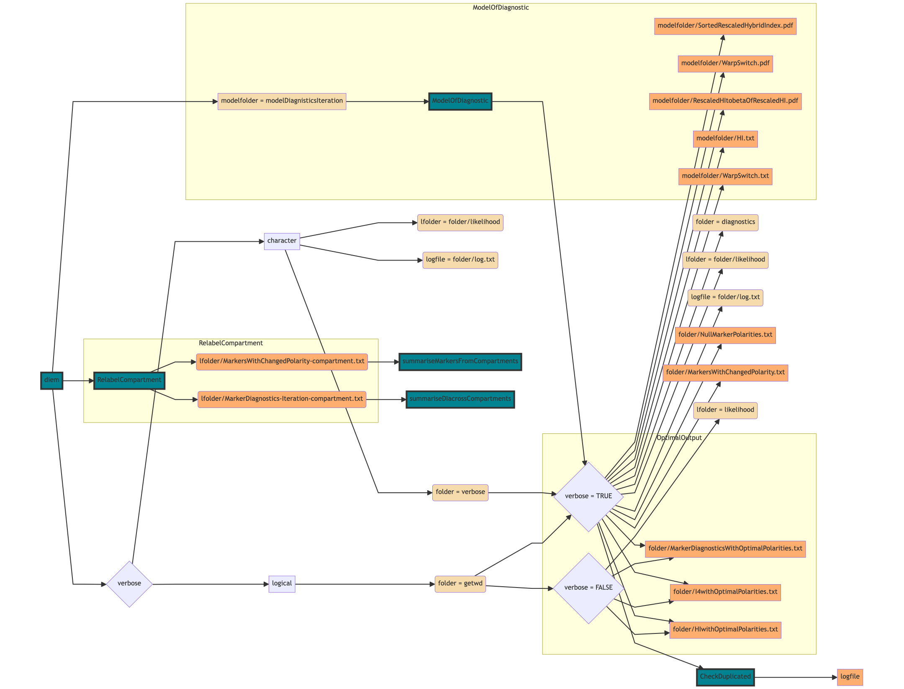

Chapter 5 Understanding genome polarisation output files
Natália Martínková and Stuart J. E. Baird
Genome polarisation (Baird et al. 2023) uses the diem algorithm to estimate which allele of a single nucleotide polymorphic marker belongs to which side of a barrier to geneflow based on whole-genome associations. The key result is then the marker polarity (whether to read the marker as in the diem input file or whether to flip the homozygous state labels 0↔︎2), marker diagnostic index (how relevant the marker is with respect to the barrier to geneflow), and marker polarity support (how certain we are regarding whether to flip the state labels or not).
This information is stored in a file MarkerDiagnosticsWithOptimalPolarities.txt with columns Marker, newPolarity, DI, and Support. However, the diem function generates other outputs, which help to control the genome polarisation analyses and to interpret the results. Some of this information is identical to the function return value. The documentation for the return values can be found by running ?diem. This vignette explains the outputs saved to files.
5.1 Obligatory outputs
Three output files will be saved to the working directory or to the path specified in the verbose argument. Those are:
- MarkerDiagnosticsWitOptimalPolarities.txt,
- HIwithOptimalPolarities.txt, and
- I4withOptimalPolarities.txt.
5.1.1 MarkerDiagnosticsWithOptimalPolarities
The MarkerDiagnosticsWithOptimalPolarities.txt is a tab-delimited table with four columns and the number of rows equal to the number of markers across all compartments used to run genome polarisation with diem. This is the key results file identifying the marker relevance with respect to the detected barrier to geneflow.
The first column newPolarity contains TRUE/FALSE values, specifying which allele in the specific marker belongs to which side of the barrier. When the value is FALSE, encoded as 0 in Eq. 22 (Baird et al. 2023), the allele encoded as 0 in its homozygous state in the input file belongs to the barrier side associated with low values of hybrid index of the individuals. When the newPolarity value for a marker is TRUE, the homozygous states need to be flipped 0↔︎2 to correctly associate with the barrier sides. In terms of interpretation, this means that the allele encoded as 2 in its homozygous state is associated with low values of the hybrid index. Which specific alleles these are for any marker can be found in the includedSites.txt file from the vcf2diem.
The second column DI is numeric with values of the diagnostic index of the markers as specified in Eq. 20 (Baird et al. 2023). The diagnostic index is a log likelihood, so its values are always negative. Polarised markers with high diagnostic index characterize the barrier to geneflow. Such markers will tend to be fixed for one allele on either side of the barrier. Conversely, markers with low diagnostic index will have signal orthogonal to the detected barrier to geneflow. They could reflect ancestral genetic variation, standing variation not contributing to the barrier to geneflow, or artifacts such as overmerging of repeated motifs onto the reference.
The third column Support is numeric and the values represent polarity support for the markers as given in Eq. 21 (Baird et al. 2023). The support is the gain in likelihood when the correct marker 0↔︎2 ‘flipping’ is compared to its reverse. High marker support gives confidence that the marker polarity reflects the detected barrier to geneflow. In general, markers with high diagnostic index tend to also have high support.
The fourth column Marker is an index of the marker that is successive in the files as they are ordered in the files argument in the diem call. The value in the Marker column will correspond to the respective index in the file ending with includedSites.txt if the input files were generated by the vcf2diem function.
5.1.2 HIwithOptimalPolarities
The HIwithOptimalPolarities.txt is a tab-delimited one-column matrix of individual hybrid indices with row names corresponding to the individual indices. Note that the hybrid indices are calculated from the polarised genotypes for all individuals found in the input files, not only those specified in the ChosenInds argument of the diem function. The hybrid indices are calculated as genome admixture from summaries of polarised genotypes as in Eq. 7 (Baird et al. 2023).
CAUTION: These hybrid indices are calculated without taking into account the diagnosticity of markers! As such they may not show barrier signal well at all. Hybrid indices and genome polarisation diagrams should be calculated and plotted after the user decides on a diagnostic index threshold. The ideal threshold will be specific to your dataset. Check Chapter 7 for guidelines how to calculate it.
If you choose to ignore this warning and include all markers when calculating hybrid indices you will find the range of hybrid indices is small, and centred on 0.5. This is because most genome sites are close to invariant, and so diem will flip homozygous state labels 0↔︎2 at random. A purely random answer will give hybrid index equal to 0.5. You can rescale hybrid indices with a large random influence using Eq. 11 (Baird et al. 2023), so they lie on the interval \([0,1]\).
5.1.3 I4withOptimalPolarities
The I4withOptimalPolarities.txt file contains genome-wide summaries of genomic states for all input genomes (Eq. 4 in (Baird et al. 2023)). It is a tab-delimited table with four columns representing the unknown state (column name “_“) that cannot be encoded as a genotype in terms of the two most frequent alleles, the second column representing homozygote encoding 0, the third column heterozygote encoding 1 and the fourth column homozygote encoding 2. The rows are all individuals in the input files, with row names corresponding to indices.
The 4-genomic state counts can be used to calculate the hybrid index, observed heterozygosity and error rate for all individuals. The equations 7, 9, and 10 (Baird et al. 2023) are implemented in the function pHetErrOnStateCount that can be applied to the rows of the I4withOptimalPolarities.
However, note that the \({}^4\mathbf{I}\) in the output was calculated from all markers (see CAUTION in the previous section). We advice the users to preferentially filter their markers based on their diagnosticity after the diem analysis and recalculate the hybrid indices and the \({}^4\mathbf{I}\) from the filtered, polarised genotypes.
5.2 Optional outputs
The diem function can output additional files useful for tracking algorithm convergence during iterations and ensuring repeatable initialisation of genome polarisation. The flowchart in Figure 1 specifies what processes generate the files and how the user controls what files will be stored and where.

Figure 5.1: Figure 1. Flowchart of how to control output files and their location in diem. Green – functions generating or using the files. Except diem all functions are internal. Beige, grey – variable values set by the user (grey) or by internal processes (beige). Orange – stored output files. Yellow rectangles – main processes generating files.
5.2.1 The user perspective
The verbose argument in the diem function controls the stored output files. The default value verbose = FALSE writes three key output files in the current working directory (Figure 1). To locate the files, the current working directory can be found with:
Additionally, the verbose argument can trigger a verbose output in two ways.
- When
verbosecontains a character string with a path to a specific folder, the verbose output will be stored in that location. - When
verbose = TRUE, the verbose output will be stored in the current working directory.
5.2.2 NullMarkerPolarities
The optimal approach to genome polarisation with diem is to strip all possible data cues before the analysis. In this way, if diem finds a barrier you can be certain it is an intrinsic property of the data. Using random initial marker polarities is central to this approach. We recommend setting the diem argument markerPolarity = FALSE. The function then generates random polarities for the initiation of the algorithm iterations.
This initial state for diem is saved in file NullMarkerPolarities.txt. It is a text file the first line describing the contents of the file. The following lines show space-separated TRUE or FALSE values, where each row corresponds to a compartment as they were specified in the files argument in diem. Because diem is a deterministic algorithm, if you start it from the same initial state, you will get precisely the same answer. You can test this by setting markerPolarity to be the list from NullMarkerPolarities.
nullPolarities <- readLines("folder/NullMarkerPolarities.txt")[-1]
nullPolarities <- lapply(
strsplit(nullPolarities, split = " "),
as.logical
)
diem(..., markerPolarities = nullPolarities)You can also test the convergence of the algorithm from different initial states by running the same analysis, but each time generating a new random null by setting markerPolarities = FALSE.
5.2.3 MarkersWithChangedPolarities
The file MarkersWithChangedPolarities.txt is a tab-delimited file with three columns and a variable number of rows. The column changedMarkers shows indices of markers across all compartments for which the polarity was changed in the given iteration compared to the marker polarity in the previous iteration. The column time gives a time stamp of when the changes were recorded. The column iteration specifies the iteration of the algorithm.
Note that here, markers are pooled across all compartments. The information is useful in tracking convergence in postprocessing, and so is not of interest to the casual user. During the analysis run, keeping the information about polarity changes separate for each compartment is computationally more tractable, especially in parallel processing. A set of files specifying the information for each compartment is stored in a likelihood folder (Figure 1).
5.2.3.1 MarkersWithChangedPolarities-(compartmentNumber)
The contents of the files is analogical as in the MarkersWithChangedPolarities.txt. The difference being that the marker indices are sequential for each compartment.
5.2.3.2 MarkerDiagnostics(iteration)-(compartmentNumber)
The contents of the files correspond to the contents of the MarkerDiagnosticsWithOptimalPolarities.txt. Here, the polarities, diagnostic indices and their supports are reported separately for each iteration and for each compartment.
Both sets of compartment-specific temporary files are initially stored regardless of the value in the verbose argument, as they are used internally during the analysis. When verbose = FALSE, diem attempts to delete the likelihood folder on exit.
5.2.4 Iteration-specific graphics
The internal ModelOfDiagnostic function implements Eq. 19 (Baird et al. 2023) that is the powerful tool to detect the most prominent barrier to geneflow in the data. Seeing how individuals become separated on either side of the barrier provides insights into the algorithm convergence.
5.2.4.1 WarpSwitch files
The WarpSwitch.pdf files plot differences in sorted rescaled hybrid indices (Eq. 12) used to identify the barrier to geneflow (Baird et al. 2023). The WarpSwitch.txt files then describe what genomic states the ideal diagnostic marker would have for all included individuals (Eq. 13), and how the ideal 4-genomic state count matrix (Eq. 14) would look like for the first ten individuals.
5.2.4.2 Hybrid index files
The SortedRescaledHybridIndex.pdf shows how the differences in hybrid indices between individuals belonging to either side of the barrier become more pronounced with progressing iterations. Note that in order to identify which individuals are placed where, one needs to replicate the figure from hybrid index values in files HI.txt.
The files RescaledHItobetaOfRescaledHI.pdf show the weight for the hybrid index (Eq. 15) that together with the parameter value in the diem argument epsilon will inform on how much emphasis the analysis puts on the ideal state with the center of the barrier identified in the WarpSwich files.
The visualisation in the iteration-specific graphics provide a tangible track record of how the theoretical ideals of pure individuals and perfectly diagnostic markers contribute to informing on a barrier to geneflow in a realistic scenario, where there are no pure individuals and no perfectly diagnostic markers.
5.2.5 The log file
The log.txt file provides a human-readable overview of the diem iterations. During initialisation stage, the log file will list the number of markers and individuals in the analysis run, followed by the top seven rows of the 4-genomic state count matrix \({}^4\mathbf{I}\) with null polarisation, correction for small data (Eq. 5), top seven rows of the \({}^4\mathbf{A}\), which is the \({}^4\mathbf{I}\) matrix corrected for compartment- and individual-specific ploidies and is used to calculate the hybrid index, the top seven rows of the weighted \({}^4\mathbf{V}\) matrix (Eq. 16), and the respective log-likelihood values (Eq. 19).
For subsequent iterations, the log file also quantifies how many markers switch polarities between iterations, and shows the corresponding change to the \({}^4\mathbf{I}\).